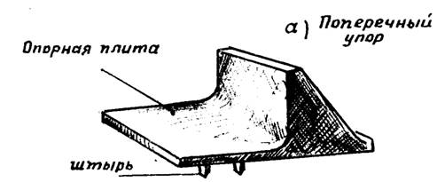
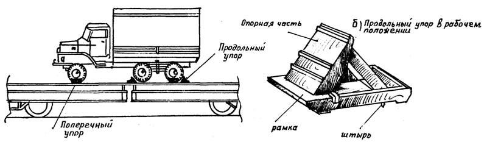
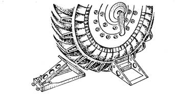
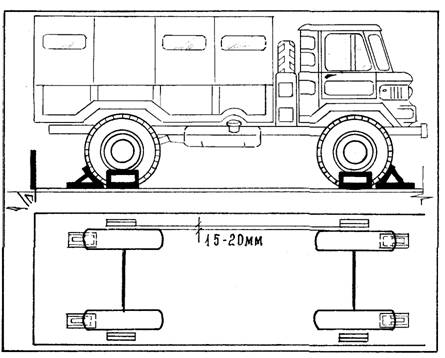
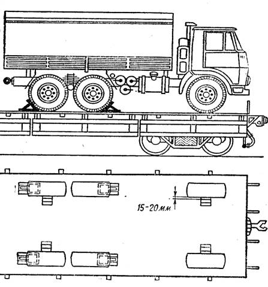
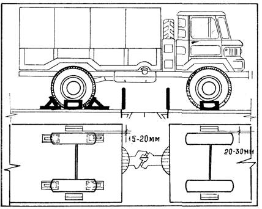
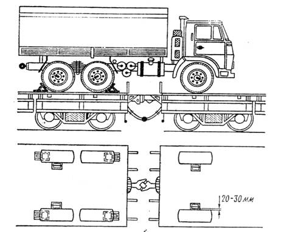

2. Maşyny ýüklemäge taýýarlamak
3. Tigirli maşyny açyk wagonda ýerleşdirmegiň we berkitmegiň tertibi
Iki oklyk maşynlary berkitmegiň usuly
Üç oklyk maşynlary berkitmegiň usuly
Dört oklyk maşynlary berkitmegiň usuly
Iki oklyk maşynlary sepleşigiň üstünde berkitmegiň usullary
Üç oklyk maşynlary sepleşigiň üstünde berkitmegiň usullary
4. Ýüklenen maşynlary daşamaga taýýarlamak
Berkitmek köp gezek ulanylýan uniwersal berkidijileriň toplumlary (UKB-I K we UKB-2K) bilen geçirilýär.
Surat. Köp gezek ulanylýan uniwersal berkidijiler (1-direg, 2-berkidiji, 3-çiş, 4-çarçuwa, 5-direg plitasy)
№ 1 (a) usul - Tigirli maşynlary köp gezek ulanylýan uniwersal berkidijiler bilen berkitmek
|
UKB-niň TIPI |
Tigirli maşynlaryň agramy, t |
Toplumyň ölçegleri, mm |
Çişleriň sany, sany
|
Çişleriň ölçegi, sany uzynlygy*diametri |
Toplumyň agramy, kg |
|
UMK-1K |
15çenli |
480*200*280 |
2 kese diregde; 4 uzaboýuna |
45*10 |
36 |
|
UMK-2K |
15,1-26 |
540*245*280 |
2 gapdal diregde; 6 uzaboýuna |
45*14 |
80 |
№ 1(b) usul - Tigirli maşynlary köp gezek ulanylýan uniwersal berkidijiler bilen berkitmek (UKB-1KM, UKB-2 KM)
|
KYSYM UMK |
Maşynyň agramy, t |
Toplumyň düzümi |
Bukjanyň gabaralary, mm |
Toplumyň agramy, kg |
|
UMK – 1KM |
1,5 – 16,0 |
4 uzaboýuna we 4 kese direg |
470*170*110 |
34 |
|
UMK – 2KM |
16,1-24,0 |
570*210*140 |
64 |
|
|
Bellik: Agramy 24,1 – 42,0 t bolan maşynlar iki toplum UKB -2 bilen berkidilýär |
||||
Aýry-aýry birlikleriniň agramy 15 tonna çenli maşynlar bir toplum UKB-1K bilen, agramy 15,1 -26 tonna bolanlary bir toplum UKB-2K bilen, agramy 26,1 -40 tonna bolanlary bolsa iki toplum UKB-2K bilen berkidilýär.
Maşynlary berkitmek üçin berkidijileriň bukjalary sökülýär, uzaboýuna we kese diregler işçi ýagdaýa geçirilýär.



Surat. UKB-ni gurnamagyň usuly
Ähli uzaboýuna we kese diregleriň üstünde halkasyndan çişleriň berkidijileri özüňe çekilýär we sagat diliniň ugry boýunça öwrülýär, uzaboýuna diregiň berkidijisi bolsa sagat diliniň garşysyna öwrülýär. Iň çetki ýagdaýda berkidijiler awtomatik usulda içki ilgenege oturýar.
Berkidijileriň şu ýagdaýynda çişler ýokary-aşak erkin süýşýär.
Açyk wagonda ýerleşdirilen maşynyň tigirleriniň öňünden (yzyndan) birden kese direg gurnalýar. Maşyn tigirleri bilen diregleriň direg plitalarynyň üstüne münýär we saklanýar.
Maşynyň tigirlerine uzaboýuna diregler gurnalýar.
Uzaboýuna we kese diregleriň çişleri nobatma-nobat doly açyk wagonyň düşegine kakylýar we berkidijileriň kömegi bilen berkidilýär, bu aşakdaky suratda görkezilen. Munuň üçin halkalardan berkidijiler biraz özüňe çekilýär we olar başlangyç ýagdaýyna geçirilýär. Maşyn berkidilen.

Surat. UKB-niň uzaboýuna we kese diregini gurnamak
Berkidiş aýrylanda maşynlaryň uzaboýuna diregleriň üstünden geçmegine rugsat berilýär. Şondan soň uzaboýuna we kese diregler montirowkanyň kömegi bilen aýrylýar we bukjalara ýygnalýar.
Diregleriň dargamagynyň öňüni almak maksady bilen şular berk gadagandyr:
— berkidilen çişleri kakmak (berkidijiler çekilmedik ýagdaýynda);
— tehnika berkidilende we berkidiş aýrylanda diregleriň korpuslaryna (berkidişi aýrylan çişlerden başga) agyr zat bilen urmak;
maşynyň tigirlerine degip duran diregleri aýyrmak.
2. Maşyny ýüklemäge taýýarlamak
Tigirli maşyny açyk wagonda berkitmek üçin ýüklemezden öň şular zerurdyr:
— hapadan, gyşyna bolsa gardan we buzdan gowy arassalamaly;
— tormoz ulgamynyň sazlygyny barlamaly;
— ulanyş boýunça gollanma laýyklykda demir ýol boýunça daşamak üçin ýagdaýa getirmeli.
3. Tigirli maşyny açyk wagonda ýerleşdirmegiň we berkitmegiň tertibi
Iki oklyk maşynlar öňdäki we yzdaky mostlaryň tigirleriniň ýanynda (tigirleriň öňünden we yzyndan) gurnalýan dört uzaboýuna direg bilen we her bir tigriň aşagyna içki (daşky) tarapyndan gurnalýan dört kese direg bilen berkidilýär.

Surat. Iki oklyk awtoulagy UKB-2K-nyň kömegi bilen berkitmek
Üç oklyk maşynlar ortaky we yzdaky mostlaryň tigirleriniň ýanynda '(tigirleriň öňünden we yzyndan) gurnalýan dört uzaboýuna direg bilen we öňdäki hem yzdaky mostlaryň tigirleriniň aşagyna gurnalýan dört kese direg bilen berkidilýär.

Surat. Üç oklyk awtoulagy UKB-2K-nyň kömegi bilen berkitmek
Dört oklyk maşyn bir toplum UKB bilen berkidilende uzaboýuna diregler çetki mostlaryň tigirleriniň ýanynda (tigirleriň öňünden we yzyndan), kese diregler bolsa şol tigirleriň aşagyna içki tarapyndan gurnalýar.
Dört oklyk maşyn (MAZ-543 görnüşli) iki toplum UKB – 2K bilen berkidilende uzaboýuna diregler birinji we üçünji mostlaryň tigirleriniň ýanynda bir tarapa, ikinji we dördünjileriňki bolsa garşylyklaýyn tarapa goýulýar. Kese diregler her bir tigriň aşagyna goýulýar, bu aşakdaky suratda görkezilen.

Surat. 4 oklyk awtoulagy UKB-2K-nyň kömegi bilen berkitmek
Eger açyk wagonlaryň sepleşiginiň üstünde iki oklyk maşyn ýerleşýän bolsa, onda onuň diňe yzdaky mostunyň tigirleri uzaboýuna diregler bilen berkidilýär (iki tarapdan hem). Öňdäki mostuň tigirleriniň aşagyna diregler daşlyklaryň gapdal ýüzünden 20 – 30 mm aralykda goýulýar, bu aşakdaky suratda görkezilen.

Surat. Açyk wagonlaryň sepleşiginiň üstünde ýerleşdirilen iki oklyk awtoulaglary UKB – 1K-nyň kömegi bilen berkitmek
Üç oklyk maşynda ortaky we yzdaky mostlaryň tigirleri. Öňdäki mostuň tigirleriniň aşagyna diregler daşlyklaryň gapdal ýüzünden 20 – 30 mm aralykda gurnalýar.

Surat. Açyk wagonlaryň sepleşiginiň üstünde ýerleşdirilen üç oklyk awtoulaglary UKB – 1K-nyň kömegi bilen berkitmek
Kese diregler yzdaky we öňdäki mostlaryň tigirleriniň aşagyna daşky (içki) taraplaryndan gurnalýar.
4. Ýüklenen maşynlary daşamaga taýýarlamak
Harby tehnika demir ýol hereket edýän düzüminde ýerleşdirilenden soň şular zerurdyr:
harby tehnikany mümkin bolan uzaboýuna we kese süýşmelerden berkitmeli;
duralga tormozlaryny, pes geçirişi işletmeli;
wagonlaryň sepleşiginiň üstünde goýlan awtoulaglarda öňdäki hereketlendiriji mosty öçürmeli;
ýüklenen harby tehnikanyň, aýrylýan enjamlaryň (ot söndürijileriň, pilleriň, merdiwanlaryň we ş.m.) hem-de ätiýaçlyk tigirleriň berkidilişini barlamaly;
saklaýjylar we berkidijiler sazsyz bolan halatynda harby tehnikanyň ähli aýlanýan, çykyp duran bölekleri ýöriş ýagdaýynda sim çekmeler bilen berkidilmelidir;
harby tehnikanyň ýagdaýynyň ýüklemegiň gabarasyna ýa-da gabaradan daşary ýükleri daşamaga bolan talaplara laýyk gelýändigini barlamaly;
aýnalary öňünden galdyryp, lýuklary, kabinalaryň gapylaryny ýapmaly we möhürlemeli;
sowuk döwürde sowadyş ulgamyndan suwy boşatmaly;
açyk wagonlaryň bortlaryny ýapmaly we gulplar bilen berkitmeli; tehnikanyň ini açyk wagonlaryň gapdal bortlaryny ýapmaga mümkinçilik bermeýän halatlarda olary açyk (aşak goýberilen) ýagdaýda berkitmeli (demir bortlary uzaboýuna balkalardaky halkalara berkitmeli, halkalar bolmadyk halatynda bolsa — sim bilen daňmaly);
ýüklenen harby tehnikanyň maskirowkasyny geçirmeli (zerur bolan halatynda).
Eger maşynyň gurluş aýratynlyklary boýunça ýüklenenden soň açyk wagonlaryň gapdal bortlary ýapylyp bilinmese, onda kese diregler maşynyň her bir tigriniň aşagyna gurnalýar.
Görkezilen talap maşynlar bortsuz açyk wagonlarda daşalanda hem degişlidir.